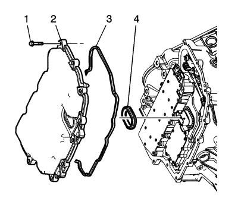

Sustitución de la tapa del cuerpo de válvulas de control
Procedimiento de desmontaje
- Desconecte el cable de batería negativo. Consultar Desconexión y conexión del cable de batería negativo .

- Extraiga los tubos flexibles de entrada (1) y salida (2) del refrigerador de aceite del seguro (2) de la tapa del cuerpo de válvula de control.
- Elevar el vehículo y soportarlo de manera segura. Consultar Elevación del vehículo con un gato .
- Desmontar la pantalla de protección del motor. Consultar Sustitución del protector del motor .
- Desmonte el protector del motor izquierdo.
- Desmonte el revestimiento de la aleta frontal izquierda. Consultar Sustitución del revestimiento del panel del paso de rueda delantero .
- Desmonte el alojamiento de la transmisión frontal. Consultar Sustitución del soporte de montaje delantero de la caja de cambios .
- Vacíe el cambio. Consultar Sustitución del aceite del cambio .

- Desconecte el conector eléctrico (1) del módulo de control del cambio (TCM) del cuerpo de válvulas de control.

- Extraiga los tornillos de la tapa del cuerpo de válvula de control (1).
- Apoye la caja de cambios con un gato de transmisión.
- Con el gato de transmisión eleva la transmisión para tener el suficiente espacio libre para desmontar la cubierta de la carrocería de la válvula de control.
- Retire la cubierta del cuerpo de válvula.
- Retire la junta de la cubierta del cuerpo de válvulas control.
Atención: Al desmontar la junta, sujete el conjunto de la válvula solenoide de control alrededor del conector. Una fuerza de tracción excesiva podría dañar las conexiones eléctricas internas.
- Extraiga el sellado de orificio de conector de cables de la tapa del cuerpo de válvula de control.
- Elimine todos los restos del material de junta antiguo. Limpie las superficies de la carcasa de la caja de cambios y de las juntas de la cubierta del cuerpo de válvula de control.
Procedimiento de montaje
- Monte el sellado de orificio de conector de cables de la tapa del cuerpo de válvula de control (4).
- Monte la junta de la tapa del cuerpo de válvula de control (3) en la tapa del cuerpo de válvula de control.
- Monte la tapa del cuerpo de válvula de control (2).
- Baje la transmisión y retire el gato de transmisión.
Nota: Monte todos los tornillos de la cubierta de la carrocería de la válvula de control a mano antes de apretarlos en el orden que se especifica.
- Apriete a mano todos los tornillos de la cubierta del cuerpo de válvula de control (1).
Precaución: Consulte Precaución con las fijaciones en la sección Prólogo

- Coloque los tornillos de la cubierta del cuerpo de válvula de control y apriételos por orden hasta 12 N·m (106 lb in).
- Conecte el conector eléctrico del TCM de la carrocería de la válvula de control (1).
- Monte el alojamiento de la transmisión frontal. Consultar Sustitución del soporte de montaje delantero de la caja de cambios .
- Monte el revestimiento de la aleta frontal izquierda. Consultar Sustitución del revestimiento del panel del paso de rueda delantero .
- Monte el protector del motor izquierdo.
- Monte la pantalla de protección del motor. Consultar Sustitución del protector del motor .
- Bajar el vehículo.
- Monte los tubos flexibles de entrada (1) y salida (5) del refrigerador de aceite al seguro (2) de la tapa del cuerpo de válvula de control.
- Conectar el cable de batería negativo. Consultar Desconexión y conexión del cable de batería negativo .
- Llene el cambio. Consultar Sustitución del aceite del cambio .
- Compruebe si hay fugas.
| © Copyright Chevrolet Europe. All rights reserved |